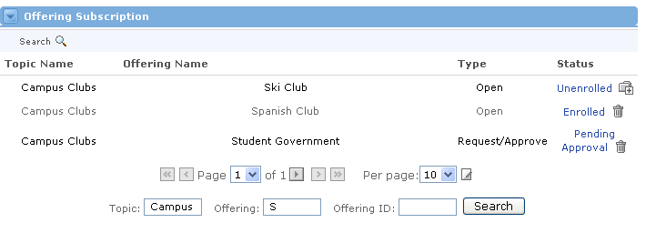
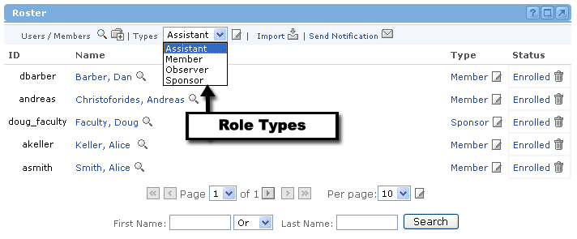
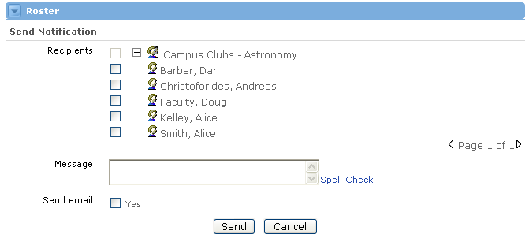

Roster Channel
Looking for more help options? Click Here
The Roster Channel :Understanding the Roster
:Manage Enrollment
:Understanding the Roster
:Manage Enrollment
Enrolling and Unenrolling Offering Participants
Different Role Types for an Offering
Setting Permissions for Specific Offering Users
Sending Notifications to Members on the Roster
The Roster Channel is a listing of the users enrolled in the current offering.

The default view shows a listing of users enrolled in the current offering. The listing is alphabetical in the order of last name, first name. Specific information may also be displayed for each user depending on the permissions of the user viewing the roster. If permissions exist, the roster may also display User ID, User Type, and User Status.
 - displays the view for searching for a specific user to enroll in the offering and add to the roster.
- displays the view for searching for a specific user to enroll in the offering and add to the roster.
 - displays the view for editing the role permissions for User Types within the current offering. This will modified the selected role type across the entire offering.
- displays the view for editing the role permissions for User Types within the current offering. This will modified the selected role type across the entire offering.
Within the Roster Channel, the ability to import users into the offering is supported. The roster import file must contain the username and role for each user to be added to the offering.
 - This view allows you to enter the file name for the roster to be imported.
- This view allows you to enter the file name for the roster to be imported.
From the main roster view, a user can select an enrolled user to:
 - displays the view showing details for the selected user. Details user-specific information like system identification, name, and email. Some user-specific details may only be viewed with the proper permissions.
- displays the view showing details for the selected user. Details user-specific information like system identification, name, and email. Some user-specific details may only be viewed with the proper permissions.
- displays the view for editing the role permissions of the selected user. Changes will be applied only to the selected user.
 - displays the view to unenroll the selected user from the offering and remove them from the roster.
- displays the view to unenroll the selected user from the offering and remove them from the roster.
The purpose of the Roster channel is to manage the enrollment aspects of an offering You cannot create new users from within the roster channel (This must be done through the "User Administration" channel or via an external authentication system depending on the institutional authentication method.).
The Roster channel consists of three main sections.
- The toolbar
- A navigable list of enrolled users
- A quick user search section
From the Roster channel, you will be able to:
- Go to the main view of the current roster of the offering.
- Search for users to enroll into the offering.
- Unenroll current users from the offering.
- Change permission preferences for a specific role.
- View specific information about a user.
- Change permissions for individual users enrolled in the offering.
- Import users from a file into the offering.
- Send notification messages to users in the offering.
- Search for a user already enrolled within the offering.

|
The roster channel appears whenever you are viewing a created offering. The default view will show the users who are currently enrolled in the offering. This includes the Sponsor (or instructor) of the offering. |
|
The roster list consists of four pieces of information about each user:
|
Navigating Through Large Rosters Beneath the roster list, there are navigation buttons that allow you to find a specific user within the offering. Here is a brief description of each button's function:
|
|
There are two different ways to enroll a user to the roster of an offering. You can either import a user from a file on your computer, or you can search for an existing user in the system. |
Searching for an Existing User To search for a user to enroll in this offering, complete the following steps:
2. Enter any combination of the person's first name, last name, or User ID in the appropriate text boxes.
 4. When the sponsor views the Roster channel for this offering, they will see that your status is Pending . All they have to do is click on the link to initiate the approval process.
5. After clicking on the Pending link, the sponsor will be asked to confirm the enrollment approval. Simply select Yes and click the Submit button.
Unenrolling a User If you decide that a user within an offering should not be enrolled, you can unenroll them quickly and easily. Here's how:
|


|
|
Unenrolling users from the roster will automatically delete their row from the Gradebook as well as all associated details. |
What are Permissions?
When you set or define the permissions for an offering, you are basically setting limits for what each role type can do. Each user is then assigned to a default role, which governs their permissions. However, you can also edit the permissions for each specific user if you don't like the default settings. But first, we will explain how to change the permissions for a specific role type. This is called Editing a Role.
Editing a Role To Edit a Role for the current offering, simply select a role from the drop-down menu at the top of the Roster channel and click the Edit icon. |

You will now see a long list of different functionality or system behaviors specific to each of the Groupware channels. Check the boxes next to features that you would like this role type to be allowed to do. Uncheck the boxes if you would want this role type to be restricted from performing those corresponding features.
Once you have made all the necessary changes, click the "Update" button at the bottom of the channel. Or, click "Cancel" to return to the Roster without making any changes.
|
|
Remember! The changes you make here will affect all users of the specified role type for this offering. If you want to select permissions for specific users, read the Setting Permissions for Specific Users section. |
To edit the permissions for specific users, you must start from the Main Roster view. If necessary, use the navigation tools to find a specific user in this offering. When they appear on the Roster List, click on the Edit icon under the "Type" column next to their name.
The Edit Role page will now appear. Note that this page applies to a specific user (Student ID) rather than an entire Role type. Check the boxes for the features this user should be allowed to do. Uncheck the boxes for features this user should be restricted from performing.
Once you have made all the necessary changes, click the "Update" button at the bottom. Or, click "Cancel" to return to the Roster without making any changes.
Once you return to the main view of users, the altered set of permissions will now be displayed as "user defined = ID."
Import a Roster
|
The Import Roster feature allows you to save time by enrolling all users into an offering at one time, rather than individually. This feature is usually utilized by people who want to import users and offerings from their own system into Academus. It must be completed in the following order:
You can only import rosters if the users already exist in the system. This feature will not create user accounts. Instead, it enrolls multiple existing users into the current offering. |
How it Works Importing a roster is fairly simple. First, you must click on the import link at the top of the channel.
|
Now you need to upload the appropriate file from your computer. If you know the exact path to the file, type it in the text box provided. Otherwise, click on the Browse button to locate the file on your computer. Select the file and click Open. Its path will be written to the "File:" text box.

|
Once you've located the file and its path is entered in the "File:" text box, click the Submit button. The system will read your file and it will enroll all valid users. |
File Format Roster import files should be XML files, using the following format: <rosterChannel> |
The Roster channel allows users to send notifications to one another or to everyone enrolled in the offering. The first step to do this is to click on the Send Notification link at the top of the Roster channel.

Selecting an Audience
Now you need to decide who will receive this message. To send it to everyone enrolled in the offering, check the box next to the name of the offering.
If you would like to send it to a specific set of users within the offering, leave the box unchecked and click the plus (+) button to the left of the offering name. This will expand the view to show individual users enrolled in the offering.
Check the boxes next to those users, who should receive the notification. To navigate to the names of additional users, click the arrow icon in the lower right hand portion of the channel.

Sending Your Message
Now that you have selected the desired audience, simply type the message into the text box provided. Click Spell Check to check the contents of your message. Once your message is ready to be sent, click the Send button.
If you would like to return to the Roster view without sending the notifications, simply click the Cancel button.
|
You additionally have the option of sending the notification as an e-mail. If chosen, an e-mail will be sent to all of the specified recipients as well. |
|
Users who have been selected to receive this notification will now see a message which alerts them about the new message. The look and location of this alert will vary based on the presentation options selected by your institution. One example is presented below. |